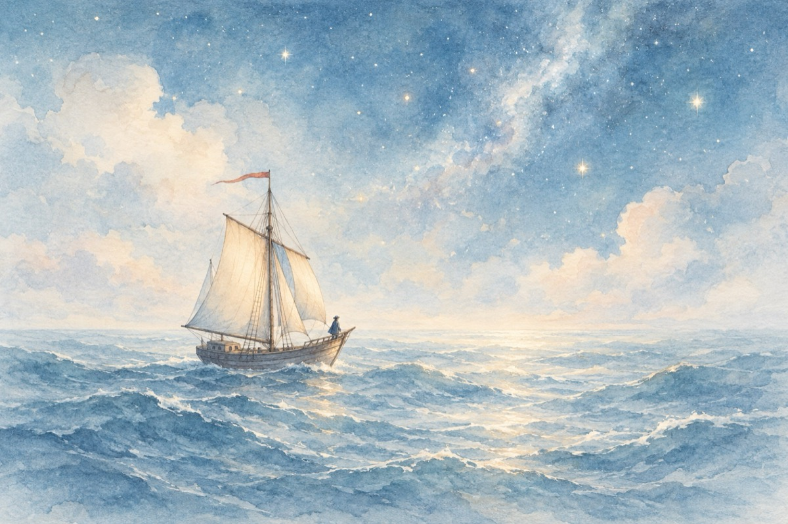

Și totuși
Pelion, Grecia.
Și totuși, oare există veșnicie?
Răspunsul ar fi la „acela” ce ne-a conceput.
Putem fi ca un balon, o jucărie,
Ce-n universu-acesta tot „El” ne-ar fi pierdut!
Sau poate că suntem ca o iluzie
Care trăim secunda cosmică
Ce creatorul n-are dreptul la o fantezie?
Iar noi să ne-amăgim că viața-i veșnică!?
Plutim ca o corabie-n derivă pe ocean,
Purtați de valuri și aruncați oriunde
Cu-n căpitan fără busolă și ochean
Cu neștiința când și unde vom ajunge!
Orice-nceput el are și-un sfârșit
Și cosmosul trăiește-așa ceva
Big-bangul a fost calea de început
Și tot acesta ciclic din nou ne va crea.
Există, totuși, în timpul cosmic veșnicia!?
Vasile Groza